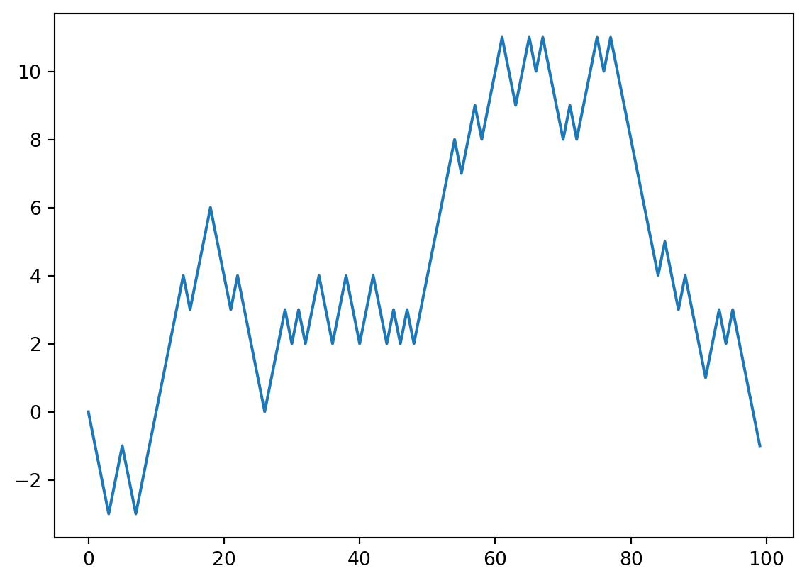
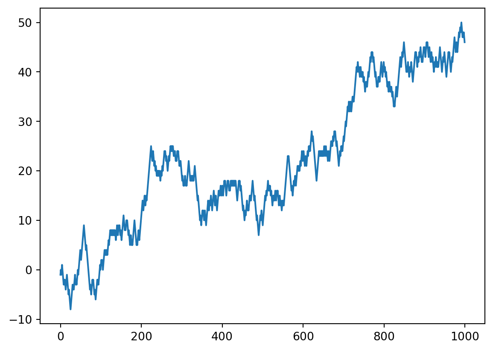

# NumPy array of one-million integers vs Python list
import numpy as np
import timeit
my_arr = np.arange(1_000_000)
my_list = list(range(1_000_000))[4] Arrays and Vectorized Computation
A series of posts, exploring data analysis using the book - Python for Data Analysis, 3E by Wes McKinney
Python
NumPy
Learning notes - Python for Data Analysis, 3E - Wes McKinney
NumPy is a fundamental Python library for numerical and scientific computing. It provides support for working with large, multi-dimensional arrays and matrices, along with a vast collection of mathematical functions to operate on these arrays. Here’s a must-know summary of NumPy:
Multi-dimensional Arrays: NumPy’s core feature is its
ndarray(n-dimensional array) data structure. It allows you to represent and manipulate data in multiple dimensions (1D, 2D, or higher), making it ideal for scientific and mathematical computations.Efficient Data Storage: NumPy arrays are memory-efficient and provide a contiguous block of memory for data storage. This enables fast and efficient numerical operations and makes NumPy an essential tool for handling large datasets.
Element-Wise Operations: NumPy supports element-wise operations, which means you can perform operations on entire arrays or slices of arrays without the need for explicit loops. This feature greatly simplifies and speeds up mathematical and scientific computations.
Broadcasting: NumPy allows for broadcasting, which is a powerful mechanism for performing operations on arrays with different shapes. It automatically expands smaller arrays to match the shape of larger arrays, making computations more flexible.
Mathematical Functions: NumPy provides a wide range of mathematical functions, including basic arithmetic, linear algebra, Fourier analysis, statistical, and more. These functions are optimized for performance and accuracy.
Random Number Generation: NumPy includes a random module (
np.random) for generating random numbers and random arrays, which is useful for simulations and statistical analysis.Integration with SciPy: NumPy is closely integrated with SciPy, another Python library for scientific computing. SciPy builds on NumPy and provides additional functionality for optimization, signal processing, statistics, and more.
Data Input and Output: NumPy offers functions for reading and writing data to and from files in various formats, including text files, binary files, and NumPy’s own binary format.
Interoperability: NumPy seamlessly interoperates with other libraries and data analysis tools in the Python ecosystem, such as pandas, Matplotlib, and scikit-learn. This makes it a key component in data science workflows.
Open Source and Community: NumPy is open-source software and enjoys a large and active community of contributors and users. It is continually updated and improved, ensuring its relevance in the rapidly evolving field of data science and numerical computing.
Cross-Platform: NumPy is cross-platform and can be used on various operating systems, including Windows, macOS, and Linux.
NumPy is the foundation of many scientific and data science libraries in Python and is an essential tool for tasks such as data manipulation, statistical analysis, machine learning, and more. Its ease of use and performance make it a go-to choice for researchers, scientists, engineers, and data analysts working with numerical data in Python.
Idea of performance difference
# time it
execution_time = timeit.timeit(lambda: my_arr * 2, number=10)
print(f"np array multiplication: {execution_time}")
execution_time = timeit.timeit(lambda: [ x*2 for x in my_list * 2 ], number=10)
print(f"Python list element multiplication: {execution_time}")np array multiplication: 0.008902800007490441
Python list element multiplication: 1.2835534999903757The NumPy ndarray: A Multidimensional Array Object
Batch computation
import numpy as np
data = np.array([
[1.5, -0.1, 3],
[0, -3, 6.5],
[2, 7, 9.9],
[23, 9, 21]
])
print("data: ", data)
# math operations with the ndarray
print("data * 10: ", data * 10)
print("data + data: ", data + data)data: [[ 1.5 -0.1 3. ]
[ 0. -3. 6.5]
[ 2. 7. 9.9]
[23. 9. 21. ]]
data * 10: [[ 15. -1. 30.]
[ 0. -30. 65.]
[ 20. 70. 99.]
[230. 90. 210.]]
data + data: [[ 3. -0.2 6. ]
[ 0. -6. 13. ]
[ 4. 14. 19.8]
[46. 18. 42. ]]# shape and type
print(data.shape) # tuple 4R x 3C
print(data.dtype) # ndarray is for homogeneous data(4, 3)
float64Creating ndarrays
# ndarray creation
# np.array()
data1 = [6, 7.5, 8, 0, 1] # any sequence-like object
arr1 = np.array(data1)
print(arr1)
data2 = [[1, 2, 3, 4], [5, 6, 7, 8]] # list of equal length array
arr2 = np.array(data2)
print(arr2)
print(arr2.shape)
print(arr2.dtype)
# np.zeros() / np.empty()
print(np.zeros(10))
print(np.zeros((3, 6)))
print(np.zeros((2, 3, 5)))
print(np.empty(((2, 3, 2)))) # uninitialized meory with garbage data
# np.arange()
print(np.arange(15))[6. 7.5 8. 0. 1. ]
[[1 2 3 4]
[5 6 7 8]]
(2, 4)
int32
[0. 0. 0. 0. 0. 0. 0. 0. 0. 0.]
[[0. 0. 0. 0. 0. 0.]
[0. 0. 0. 0. 0. 0.]
[0. 0. 0. 0. 0. 0.]]
[[[0. 0. 0. 0. 0.]
[0. 0. 0. 0. 0.]
[0. 0. 0. 0. 0.]]
[[0. 0. 0. 0. 0.]
[0. 0. 0. 0. 0.]
[0. 0. 0. 0. 0.]]]
[[[ 3. -0.2]
[ 6. 0. ]
[-6. 13. ]]
[[ 4. 14. ]
[19.8 46. ]
[18. 42. ]]]
[ 0 1 2 3 4 5 6 7 8 9 10 11 12 13 14]Some important NumPy array creation functions from Python for Data Analysis 3E by Wes Mckinney
Data types for ndarrays - dtype
# dtype
arr1 = np.array([1, 2, 3], dtype=np.float64)
arr2 = np.array([1, 2, 3], dtype=np.int32)
print(arr1, arr1.dtype)
print(arr2, arr2.dtype)[1. 2. 3.] float64
[1 2 3] int32# type casting - astype()
arr_float = np.array([3.7, -1.2, -2.6, 0.5, 12.9, 10.1])
print(arr_float)
arr_int = arr_float.astype(np.int32) # decimal truncated
print(arr_int)
numeric_strings = np.array(["1.25", "-9.6", "42"], dtype=np.string_)
print(numeric_strings)
numeric_from_strings = numeric_strings.astype(float) # ValueError when fails
print(numeric_from_strings)
# conver to the other array's type
int_array = np.arange(10)
calibers = np.array([.22, .270, .357, .380, .44, .50], dtype=np.float64)
print(int_array.astype(calibers.dtype))[ 3.7 -1.2 -2.6 0.5 12.9 10.1]
[ 3 -1 -2 0 12 10]
[b'1.25' b'-9.6' b'42']
[ 1.25 -9.6 42. ]
[0. 1. 2. 3. 4. 5. 6. 7. 8. 9.]Arithmetic with NumPy Arrays
# arrays in shame shape
print("\nArrays in shame shape\n")
arr = np.array([[1., 2., 3.], [4., 5., 6.]])
print(arr)
print(arr * arr) # element-wise multiplication
# print(arr * [10, 200]) # broadcast error, not in same shape
print(arr - arr) # element-wies subraction
# array with salar
print("\nArray with salar\n")
print(1 / arr) # applied with each element
print(arr ** 2)
# array comparison
print("\nArray comparison\n")
arr2 = np.array([[0., 4., 1.], [7., 2., 12.]])
print(arr2)
arr_bool = arr < arr2 # element-wise boolean evaluation
print(arr_bool)
if arr_bool.all():
print("Two arrays are same.")
else:
print("Two arrays are different.")
Arrays in shame shape
[[1. 2. 3.]
[4. 5. 6.]]
[[ 1. 4. 9.]
[16. 25. 36.]]
[[0. 0. 0.]
[0. 0. 0.]]
Array with salar
[[1. 0.5 0.33333333]
[0.25 0.2 0.16666667]]
[[ 1. 4. 9.]
[16. 25. 36.]]
Array comparison
[[ 0. 4. 1.]
[ 7. 2. 12.]]
[[False True False]
[ True False True]]
Two arrays are different.Basic Indexing and Slicing
# Similar to Python lists
print("\nSimilar to Python lists...\n")
arr = np.arange(10)
print(arr)
print(arr[5]) # element accessing
print(arr[5:8]) # slicing
arr[5:8] = 99 # assignment changes broadcasts the new valjue, relfected to the original array - value propagation / broadcast
print(arr)
arr_slice = arr[5:8] # check broadcasted value
print(arr_slice)
arr_slice[1] = 12345 # value propagation to the original
print(arr)
# Assignment to all values - bare slice [:]
print("\nAssignment to all values - bare slice [:]...\n")
arr_slice[:] = 64
print(arr) # value propagation to the original
# 2d array, each index of 1-d array, not scalar
print("\n2d array, each index of 1-d array, not scalar...\n")
arr2d = np.array([[1, 2, 3], [4, 5, 6], [7, 8, 9]])
print(arr2d)
print(arr2d[2], type(arr2d[2]))
print(arr2d[0][2]) # accessing individual element
# Axis in 2-d array
print("\narr(r, c) - Axis0 (row), Axis1 (col) in 2-d array...\n")
print(arr2d[0, 2]) # same as above
Similar to Python lists...
[0 1 2 3 4 5 6 7 8 9]
5
[5 6 7]
[ 0 1 2 3 4 99 99 99 8 9]
[99 99 99]
[ 0 1 2 3 4 99 12345 99 8 9]
Assignment to all values - bare slice [:]...
[ 0 1 2 3 4 64 64 64 8 9]
2d array, each index of 1-d array, not scalar...
[[1 2 3]
[4 5 6]
[7 8 9]]
[7 8 9] <class 'numpy.ndarray'>
3
arr(r, c) - Axis0 (row), Axis1 (col) in 2-d array...
3# 3-d -> 2-d -> 1-d
arr3d = np.array([[[1, 2, 3], [4, 5, 6]], [[7, 8, 9], [10, 11, 12]]])
print("arr3d: ", arr3d)
print(arr3d.shape)
print(arr3d[0]) # arr3d[0] 2x3 array, first row
old_values = arr3d[0].copy() # save to variable
print(old_values)
arr3d[0] = 99 # change with scalar, broadcasting to the whole 2x3
print(arr3d)
arr3d[0] = old_values # change with array
print(arr3d)
print("arr3d[1, 0]: ", arr3d[1, 0])arr3d: [[[ 1 2 3]
[ 4 5 6]]
[[ 7 8 9]
[10 11 12]]]
(2, 2, 3)
[[1 2 3]
[4 5 6]]
[[1 2 3]
[4 5 6]]
[[[99 99 99]
[99 99 99]]
[[ 7 8 9]
[10 11 12]]]
[[[ 1 2 3]
[ 4 5 6]]
[[ 7 8 9]
[10 11 12]]]
arr3d[1, 0]: [7 8 9]# Indexing with slices
print("arr: ", arr)
print("arr[1:6]: ", arr[1:6]) # 1-d array
print("arr2d: ", arr2d)
print("arr2d[:2]: ", arr2d[:2]) # 2-d array, slicing rows
print("arr2d[:2, 1:]: ",arr2d[:2, 1:] ) # 2-d array, slicing rows and columns
# select the second row, and first two cols.
lower_dim_slice = arr2d[1, :2] # slicing 1-d array
print(lower_dim_slice)
print(lower_dim_slice.shape)
# select the third col, and first two rows
print(arr2d[:2, 2])
print(arr)
# select all rows and the first col.
print(arr2d[:, :1])arr: [ 0 1 2 3 4 64 64 64 8 9]
arr[1:6]: [ 1 2 3 4 64]
arr2d: [[1 2 3]
[4 5 6]
[7 8 9]]
arr2d[:2]: [[1 2 3]
[4 5 6]]
arr2d[:2, 1:]: [[2 3]
[5 6]]
[4 5]
(2,)
[3 6]
[ 0 1 2 3 4 64 64 64 8 9]
[[1]
[4]
[7]]Boolean Indexing
# Boolean indexing
names = np.array(["Bob", "Joe", "Will", "Bob", "Will", "Joe", "Joe"])
data = np.array([[4, 7], [0, 2], [-5, 6], [0, 0], [1, 2], [-12, -4], [3, 4]])
print(names, names.shape)
print(data, data.shape)
# Suppose each name corresponds to a row in the data array
# row filtering using Boolean indexing, compare names with the string 'Bob' to filter the corresponding rows from data array
print(names == "Bob") # output - array of comparison result for each element
print(data[names == "Bob"]) # filter the corresponding rows from data, where "Bob" was matched in names.
print(data[names == "Bob", :1]) # also slice the column(s) to select the first col.
print(data[names == "Bob", 1]) # reduced to 1-d
# negating the conditon
print("\n__Negating the condition__")
print("names: ", names)
print(names == "Bob")
print(names != "Bob")
print(~(names == "Bob")) # same as !=
# Filter rows in data with the same row index where Bob is not matched in names
print(data[~(names == "Bob")])
# Use a reference variable to invert Boolean condition
cond = names == "Bob"
print(cond)
print(data[~cond]) # same as data[~(names == "Bob")]
# Multiple Boolean conditions - &, |
cond = (names == "Bob") | (names == "Will")
print(cond)
print(data[cond])['Bob' 'Joe' 'Will' 'Bob' 'Will' 'Joe' 'Joe'] (7,)
[[ 4 7]
[ 0 2]
[ -5 6]
[ 0 0]
[ 1 2]
[-12 -4]
[ 3 4]] (7, 2)
[ True False False True False False False]
[[4 7]
[0 0]]
[[4]
[0]]
[7 0]
__Negating the condition__
names: ['Bob' 'Joe' 'Will' 'Bob' 'Will' 'Joe' 'Joe']
[ True False False True False False False]
[False True True False True True True]
[False True True False True True True]
[[ 0 2]
[ -5 6]
[ 1 2]
[-12 -4]
[ 3 4]]
[ True False False True False False False]
[[ 0 2]
[ -5 6]
[ 1 2]
[-12 -4]
[ 3 4]]
[ True False True True True False False]
[[ 4 7]
[-5 6]
[ 0 0]
[ 1 2]]print("\n___Setting values with Boolean arrays___\n")
print(data)
print(data < 0)
data[data < 0] = 999 # value setting applies to element with True
print(data)
___Setting values with Boolean arrays___
[[ 4 7]
[ 0 2]
[ -5 6]
[ 0 0]
[ 1 2]
[-12 -4]
[ 3 4]]
[[False False]
[False False]
[ True False]
[False False]
[False False]
[ True True]
[False False]]
[[ 4 7]
[ 0 2]
[999 6]
[ 0 0]
[ 1 2]
[999 999]
[ 3 4]]#
cond = (names != "Joe") # Save the boolean array to a variable
print(cond)
data[cond] = 7 # set the all element in the filtered rows
print(data)[ True False True True True False False]
[[ 7 7]
[ 0 2]
[ 7 7]
[ 7 7]
[ 7 7]
[999 999]
[ 3 4]]Fancy Indexing
Describe indexing using array of integers
# Create an array of 5,4 filled initialized with zero
arr = np.zeros((8, 4))
for i in range(8):
arr[i] = i # fill each row with row index number
print(arr, "\n")
# select rows in custom order - pass an array of row index in customer order
print(arr[ [4, 3, 0, 6]], "\n")
print(arr[ [-3, -5, -7] ], "\n")
# passing multiple index arrays - select using each tuple of indices
arr = np.arange(32).reshape((8, 4))
print(arr, "\n")
print(arr[[1, 5, 7, 2], [0, 3, 1, 2]], "\n") # indexing using (1,0) (5,3) (7,1) (2,2)
# retangular shaping and subsetting
print(arr.shape)
print(arr[[1, 5, 7, 2]][:, [0, 3, 1, 2]], "\n") # rows subsetted in custom order, then cols subsetted in custom order
# value assignment using fancy indexing
print(arr[[1, 5, 7, 2], [0, 3, 1, 2]])
arr[[1, 5, 7, 2], [0, 3, 1, 2]] = 777 # changes the indexed value
print(arr)[[0. 0. 0. 0.]
[1. 1. 1. 1.]
[2. 2. 2. 2.]
[3. 3. 3. 3.]
[4. 4. 4. 4.]
[5. 5. 5. 5.]
[6. 6. 6. 6.]
[7. 7. 7. 7.]]
[[4. 4. 4. 4.]
[3. 3. 3. 3.]
[0. 0. 0. 0.]
[6. 6. 6. 6.]]
[[5. 5. 5. 5.]
[3. 3. 3. 3.]
[1. 1. 1. 1.]]
[[ 0 1 2 3]
[ 4 5 6 7]
[ 8 9 10 11]
[12 13 14 15]
[16 17 18 19]
[20 21 22 23]
[24 25 26 27]
[28 29 30 31]]
[ 4 23 29 10]
(8, 4)
[[ 4 7 5 6]
[20 23 21 22]
[28 31 29 30]
[ 8 11 9 10]]
[ 4 23 29 10]
[[ 0 1 2 3]
[777 5 6 7]
[ 8 9 777 11]
[ 12 13 14 15]
[ 16 17 18 19]
[ 20 21 22 777]
[ 24 25 26 27]
[ 28 777 30 31]]Transposing Arrays and Swapping Axes
# T attribute
print("\nT attribute in array to transpose...\n")
arr = np.arange(15).reshape(3, 5)
print(arr)
print(arr.T)
# inner matrix product using T
print("\ninner matrix product using T...\n")
arr = np.array([[0, 1, 0], [1, 2, -2], [6, 3, 2], [-1, 0, -1], [1, 0, 1
]])
print(arr)
print(arr.T)
print(np.dot(arr.T, arr)) # matrix dot product
print(arr.T @ arr) # same as above
print("\ndarray.swapaxes, same effect of transposing...\n")
print(arr)
print(arr.swapaxes(0, 1))
print(arr.T == arr.swapaxes(0,1))
T attribute in array to transpose...
[[ 0 1 2 3 4]
[ 5 6 7 8 9]
[10 11 12 13 14]]
[[ 0 5 10]
[ 1 6 11]
[ 2 7 12]
[ 3 8 13]
[ 4 9 14]]
inner matrix product using T...
[[ 0 1 0]
[ 1 2 -2]
[ 6 3 2]
[-1 0 -1]
[ 1 0 1]]
[[ 0 1 6 -1 1]
[ 1 2 3 0 0]
[ 0 -2 2 -1 1]]
[[39 20 12]
[20 14 2]
[12 2 10]]
[[39 20 12]
[20 14 2]
[12 2 10]]
darray.swapaxes, same effect of transposing...
[[ 0 1 0]
[ 1 2 -2]
[ 6 3 2]
[-1 0 -1]
[ 1 0 1]]
[[ 0 1 6 -1 1]
[ 1 2 3 0 0]
[ 0 -2 2 -1 1]]
[[ True True True True True]
[ True True True True True]
[ True True True True True]]Pseudorandom Number Generation
The numpy.random module supplements the built-in Python random module with functions for efficiently generating whole arrays of sample value from many kinds of probability distributions.
# Generates 4x4 random numbers from a standard normal distribution (mean = 0, standard deviation = 1)
samples = np.random.standard_normal(size=(4, 4))
print(samples)[[ 0.02438752 0.3888968 -0.25353428 0.50565954]
[ 0.69382098 -0.36495474 0.4066921 -0.47840471]
[-0.88659672 1.19854012 -0.34464064 -0.62669276]
[-0.01201135 -0.49104672 -0.04240425 2.90625971]]# Set to use explicit generator using seed
rng = np.random.default_rng(seed=12345)
data = rng.standard_normal((2, 3))
print(data)
data2 = rng.standard_normal((2, 3))
print(data2)
data3 = rng.standard_normal((2, 3))
print(data3)
print(type(rng))[[-1.42382504 1.26372846 -0.87066174]
[-0.25917323 -0.07534331 -0.74088465]]
[[-1.3677927 0.6488928 0.36105811]
[-1.95286306 2.34740965 0.96849691]]
[[-0.75938718 0.90219827 -0.46695317]
[-0.06068952 0.78884434 -1.25666813]]
<class 'numpy.random._generator.Generator'>numpy.random._generator.Generator class
permutation: Returns a random permutation of a sequences - list, array, shuffles the elements
import numpy as np
# Some array
arr = np.array([1, 2, 3, 4, 5])
# Generate a random permutation of the array
permuted_arr = np.random.permutation(arr)
print(permuted_arr)[3 4 1 2 5]shuffles: Shuffles elements by modifying the original in place
# some array
arr = np.array([1, 2, 3, 4, 5])
# shuffle the array in place
np.random.shuffle(arr)
print(arr)
np.random.shuffle(arr)
print(arr)
np.random.shuffle(arr)
print(arr)[3 5 4 1 2]
[5 3 2 4 1]
[4 5 1 3 2]uniform: Equal Probability Occuring, Generate random numbers from a uniform distriubution within a specified range.
# generate random numbers in uniform between 0 and 1
import numpy as np
random_nums = np.random.uniform(0, 1, size=7)
print(random_nums)[0.2830613 0.79880075 0.58422251 0.01745402 0.66536846 0.21399967
0.19575847]randint: Generate random integers within a specified range
# Generate random integers within a specified range.
import numpy as np
random_ints = np.random.randint(1, 11, size=7)
print(random_ints)[5 2 2 3 5 3 6]standard_normal: Generate random numbers from a standard normal distribution (mean=0, standard deviation=1)
# generate random numbers from a standard normal distribution
import numpy as np
random_nums = np.random.standard_normal(size=7)
print(random_nums)
print(np.mean(random_nums)) # close to 0
print(np.std(random_nums)) # close to 1[ 0.41237087 -0.68778692 0.77539471 1.15493846 -1.07059758 1.2746338
0.10654032]
0.2807848089726647
0.8288167933552584binomial: Generates random numbers from a binomial distribution (two possible outcomes, success or failure - Bernoulli trials)
import numpy as np
# Generate random numbers from a binomial distribution
random_nums = np.random.binomial(n=10, p=0.5, size=5)
print(random_nums)
# interpretation of the result
"""
The code generates 5 random numbers, each representing the number of successful outcomes in 10 independent trials where each trial has a 50% chance of success.
The possible values for each of these random numbers range from 0 to 10 because you can have 0 to 10 successful outcomes in 10 trials.
The specific numbers you obtained, [7, 5, 8, 3, 7], represent the results of 5 separate random experiments. For example, in the first experiment, you got 7 successful outcomes out of 10 trials, and in the second experiment, you got 5 successful outcomes, and so on.
The result will vary each time you run the code because it's based on random sampling, but the numbers are generated according to a binomial distribution with the specified parameters (10 trials with a 50% chance of success on each trial).
"""[5 5 5 5 2]"\nThe code generates 5 random numbers, each representing the number of successful outcomes in 10 independent trials where each trial has a 50% chance of success.\n\nThe possible values for each of these random numbers range from 0 to 10 because you can have 0 to 10 successful outcomes in 10 trials.\n\nThe specific numbers you obtained, [7, 5, 8, 3, 7], represent the results of 5 separate random experiments. For example, in the first experiment, you got 7 successful outcomes out of 10 trials, and in the second experiment, you got 5 successful outcomes, and so on.\n\nThe result will vary each time you run the code because it's based on random sampling, but the numbers are generated according to a binomial distribution with the specified parameters (10 trials with a 50% chance of success on each trial).\n"normal: Generates random numbers from a normal distribution with specified mean and standard deviation.
import numpy as np
# Generate random numbers from a normal distribution
random_nums = np.random.normal(loc=0, scale=1, size=100) # loc: mean(center peak),scale: standard deviation, size: number of random numbers to generate
print(random_nums)[-0.00696454 0.0214189 -1.42455243 0.36136736 -0.61930816 -0.31244649
1.39291758 0.98820841 -0.51702993 0.59563007 0.24867064 1.34785811
-0.69594826 0.09236997 0.24227799 -0.5922411 2.26783981 0.16404388
-0.25167976 1.22072294 0.52205938 -1.69107276 0.10705041 -0.67858279
0.99601737 1.28758256 -0.82151763 -1.15386979 0.0211763 -0.86365435
0.28562624 0.27583518 0.36980757 0.23285048 0.01086876 0.60453358
-0.7103104 0.82039425 -0.12596228 -0.53830311 0.03426621 -1.77197059
1.48829227 0.53860449 -1.15945694 0.62534058 0.69087205 1.27406982
1.58980275 -0.92830126 0.979448 0.56596988 -0.77310244 -2.01179695
-0.22836684 0.0935332 0.87793864 0.52128948 -0.35862365 0.01452477
0.10494151 -0.50833713 -0.13354027 2.13108755 0.5016837 1.10169622
1.32947346 -0.67884005 -1.00460594 -0.33893047 0.87737814 0.32742269
0.12677347 -2.47772429 -0.22611494 -1.57731021 0.77216936 0.52837262
3.38936433 -0.34167377 0.32182606 -0.37863225 0.92298595 -2.043062
-1.1717948 -0.09791369 0.38802381 -0.10557425 -0.78998972 -0.3727696
-1.95957704 1.70569364 0.47251256 0.14704871 0.58025787 1.75071261
-0.38211577 0.83111002 0.09054014 0.35010363]# draw s simple plot with the array
import matplotlib.pyplot as plt
plt.clf() # clear any previous figure with plt.
# histogram plot
plt.hist(random_nums, bins=50, density=True, alpha=0.7, color='red', edgecolor='black')
plt.xlabel('Value')
plt.ylabel('Frequency')
plt.title('Histogram of Random Numbers from Standard Normal Distribution')
plt.show()
# KDE (Kernel Density Estimate)
import seaborn as sns
import matplotlib.pyplot as plt
plt.clf() # clear any previous figure with plt.
sns.kdeplot(random_nums, color='green', fill=True)
plt.xlabel('Value')
plt.ylabel('Density')
plt.title('KDE Plot of Random Numbers from Standard Normal Distribution')
plt.show()
import matplotlib.pyplot as plt
plt.clf() # clear any previous figure with plt.
# Create a box plot
plt.boxplot(random_nums)
# Add labels and title
plt.xlabel('Value')
plt.ylabel('Distribution')
plt.title('Box Plot of Random Numbers from Standard Normal Distribution')
# Show the plot
plt.show()
# ECDF Plot (Empirical Cumulative Distribution Function): how the data accumulates moving along the x-axis, representing the cumulative distribution
plt.clf() # clear any previous figure with plt.
import numpy as np
import matplotlib.pyplot as plt
# Create an ECDF plot
sorted_nums = np.sort(random_nums)
print(len(sorted_nums))
y = np.arange(1, len(sorted_nums) + 1) / len(sorted_nums)
plt.plot(sorted_nums, y, marker='.', linestyle='none')
# Add labels and title
plt.xlabel('Value')
plt.ylabel('ECDF')
plt.title('ECDF Plot of Random Numbers from Standard Normal Distribution')
# Show the plot
plt.grid(True)
plt.show()100
beta: Generates random numbers from a beta distribution.
import numpy as np
# Generate random numbers from a beta distribution
random_nums = np.random.beta(a=2, b=5, size=5)
print(random_nums)[0.24908806 0.22241801 0.03200077 0.35978889 0.45460631]chisquare: Generates random numbers from a chi-squared distribution
import numpy as np
# Generate random numbers from a chi-squared distribution
random_nums = np.random.chisquare(df=3, size=5)
print(random_nums)[3.49405042 2.55796782 5.23348605 0.93066636 3.13663889]gamma: Generates random numbers from a gamma distribution
import numpy as np
# Generate random numbers from a gamma distribution
random_nums = np.random.gamma(shape=2, scale=2, size=5)
print(random_nums)[2.236189 3.12003875 0.38688417 1.59182572 1.4935085 ]Universal Functions: Fast Element-Wise Array Functions
ufunc, a function taht performs element-wise operatinos on data in ndarrays
# unary ufunc
arr = np.arange(10)
print(arr, type(arr))
print(np.sqrt(arr)) # sqrt on each element
print(np.exp(arr)) # exp on each element
print("-"*60)
# binary ufunc
x = rng.standard_normal(8)
y = rng.standard_normal(8)
print(x)
print(y)
print(np.maximum(x, y)) # element-wise maximum from x, y
arr = rng.standard_normal(7) * 5
print(arr)
fractional_part, integral_part = np.modf(arr) # returning two arrays
print(fractional_part)
print(integral_part) [0 1 2 3 4 5 6 7 8 9] <class 'numpy.ndarray'>
[0. 1. 1.41421356 1.73205081 2. 2.23606798
2.44948974 2.64575131 2.82842712 3. ]
[1.00000000e+00 2.71828183e+00 7.38905610e+00 2.00855369e+01
5.45981500e+01 1.48413159e+02 4.03428793e+02 1.09663316e+03
2.98095799e+03 8.10308393e+03]
------------------------------------------------------------
[ 0.57585751 1.39897899 1.32229806 -0.29969852 0.90291934 -1.62158273
-0.15818926 0.44948393]
[-1.34360107 -0.08168759 1.72473993 2.61815943 0.77736134 0.8286332
-0.95898831 -1.20938829]
[ 0.57585751 1.39897899 1.72473993 2.61815943 0.90291934 0.8286332
-0.15818926 0.44948393]
[-7.06146007 2.70773415 3.75969698 -3.2938016 -6.14337493 1.28778884
1.56451459]
[-0.06146007 0.70773415 0.75969698 -0.2938016 -0.14337493 0.28778884
0.56451459]
[-7. 2. 3. -3. -6. 1. 1.]Array-Oriented Programming with Arrays
Evaluate a function using with an array, not for loop
numpy.meshgrid()
# mumpy.meshgrid
points = np.arange(-5, 5, 0.01)
#print(points)
print(points.size) # array size
xs, ys = np.meshgrid(points, points) # create a comple grid for coordinates
#print(xs)
#print(ys)
# evaluate the function
z = np.sqrt(xs**2 + ys**2)
#print("z: ", z)
# create a plot - colorbar
import matplotlib.pyplot as plt
plt.clf() # clear any previous figure
# using imghow() function
plt.imshow(z, cmap=plt.cm.gray, extent=[-5, 5, -5, 5])
plt.colorbar()
plt.title("Image plot of $\sqrt{x^2 + y^2}$ for a grid of values")
plt.show()1000
import numpy as np
import matplotlib.pyplot as plt
# Generate the same grid as before
points = np.arange(-5, 5, 0.01)
xs, ys = np.meshgrid(points, points)
z = np.sqrt(xs**2 + ys**2)
# Create a line chart by taking values along a horizontal line (e.g., y=0)
line_values = z[len(points)//2, :]
# Create an array of x-values for the line chart
x_values = points
# Create a line chart
plt.clf()
plt.plot(x_values, line_values, label='Line Chart')
plt.xlabel('X')
plt.ylabel('Function Value')
plt.title('Line Chart of Function Values along y=0')
plt.legend()
plt.grid(True)
# Show the plot
plt.show()
Expressing conditional logicas Array Operations
numpy.where - vectorized version fo ternary expression x if condition else y
xarr = np.array([1.1, 1.2, 1.3, 1.4, 1.5])
yarr = np.array([2.1, 2.2, 2.3, 2.4, 2.5])
# Boolean arrary to use as conditional value for xarr, yarr
cond = np.array([True, False, True, True, False])
print("xarr: ", xarr)
print("yarr: ", yarr)
print("cond: ", cond)
# Generate an array to take a value for xarr when corresponding boolean array is True, otherwise take the value form yarr.
print("Generate an array to take a value for xarr when corresponding boolean array is True, otherwise take the value form yarr.")
# Using conventional list conprehension.
result_list_comprehension = [ (x if c else y)for x, y, c in zip(xarr, yarr, cond) ]
print("Result using list comprehension: ", result_list_comprehension)
print("Issues: 1. Slow 2. Won't work with multi-dimensional arrays")
# Using numpy.where(cond, xarr, yarr) - no need to be arrays for the 2nd and 3rd argument
print("Using numpy.where(cond, xarr, yarr) - no need to be arrays for the 2nd and 3rd argument.")
result_numpy_where = np.where(cond, xarr, yarr)
print("result_numpy_where: ", result_numpy_where)xarr: [1.1 1.2 1.3 1.4 1.5]
yarr: [2.1 2.2 2.3 2.4 2.5]
cond: [ True False True True False]
Generate an array to take a value for xarr when corresponding boolean array is True, otherwise take the value form yarr.
Result using list comprehension: [1.1, 2.2, 1.3, 1.4, 2.5]
Issues: 1. Slow 2. Won't work with multi-dimensional arrays
Using numpy.where(cond, xarr, yarr) - no need to be arrays for the 2nd and 3rd argument.
result_numpy_where: [1.1 2.2 1.3 1.4 2.5]Write code: Generate a matrix with random data, and replace all positive values with 2 and all negative values with -2
import numpy as np
# create a random number generator
rng = np.random.default_rng(seed=12345)
# generate an array of random numbers in 4x4, using standard_normal here,
arr = rng.standard_normal((4, 4))
print("arr using standard_normal): ", arr)
# generate a conditional boolean array by checking condition
# generate an array according to the condition and operations
print("arr > 0: ", arr > 0)
print("np.where(arr > 0, 2, -2): ", np.where(arr > 0, 2, -2)) # using scalar values
print("original arr: ", arr)
# generatate an array using boolean condition, scalars and arrays
# replace all positive values in arr with 2, if not, don't do anything
print("mix of scalar and array: ", np.where(arr > 0, 2, arr)) # set only positive values to 2, otherwise untouchedarr using standard_normal): [[-1.42382504 1.26372846 -0.87066174 -0.25917323]
[-0.07534331 -0.74088465 -1.3677927 0.6488928 ]
[ 0.36105811 -1.95286306 2.34740965 0.96849691]
[-0.75938718 0.90219827 -0.46695317 -0.06068952]]
arr > 0: [[False True False False]
[False False False True]
[ True False True True]
[False True False False]]
np.where(arr > 0, 2, -2): [[-2 2 -2 -2]
[-2 -2 -2 2]
[ 2 -2 2 2]
[-2 2 -2 -2]]
original arr: [[-1.42382504 1.26372846 -0.87066174 -0.25917323]
[-0.07534331 -0.74088465 -1.3677927 0.6488928 ]
[ 0.36105811 -1.95286306 2.34740965 0.96849691]
[-0.75938718 0.90219827 -0.46695317 -0.06068952]]
mix of scalar and array: [[-1.42382504 2. -0.87066174 -0.25917323]
[-0.07534331 -0.74088465 -1.3677927 2. ]
[ 2. -1.95286306 2. 2. ]
[-0.75938718 2. -0.46695317 -0.06068952]]Mathematical and Statistical Methods
NumPy provides array methods and functions for statistical computations like sum, mean, and std. These can be applied to entire arrays or along specific axes. Methods are called on array instances, while functions like numpy.sum take the array as the first argument.
Write code: Generate some normally distributed random data, and apply reduction (aggregation) functions to the array - average, total, standard deviation, standard variance, minimum, maximum, indices of minimum and maximum, cumulative sum, cumulative product.
import numpy as np
# create a random number generator using normal distributionin 5x4 array
rng = np.random.default_rng(seed=12345)
arr = rng.standard_normal((5, 4))
print("Random number array: ", arr)
print("Average of array - array.mean(): ", arr.mean()) # call on array
print("Average of array - numpy.mean(): ", np.mean(arr)) # pass array
# compute avearge over columns
print("Average along columns: ", arr.mean(axis=1))
# compute total over rows
print("Total along the rows: ", arr.sum(axis=0))
# standard deviation and variance
print("Standard variance: ", np.var(arr))
print("Standard deviation: ", np.std(arr)) # sqrt(standard_variance)
# maximum value
print("Maximum: ", np.max(arr), "Indice of max element: ", np.argmax(arr))
# minimum value
print("Minimum: ", np.min(arr), "Indice of min element: ", np.argmin(arr))
# cumulative sum of elements - flattened
print("Cumulative sum: ", arr.cumsum())
# cumulative sum of elements (axis=1, columns)
print("Cumulative sum(cols): ", arr.cumsum(axis=1))
# cumulative sum of elements (axis=0, rows)
print("Cumulative sum(rows): ", arr.cumsum(axis=0))
# cumulative product of elements
print("Cumulative product: ", arr.cumprod())Random number array: [[-1.42382504 1.26372846 -0.87066174 -0.25917323]
[-0.07534331 -0.74088465 -1.3677927 0.6488928 ]
[ 0.36105811 -1.95286306 2.34740965 0.96849691]
[-0.75938718 0.90219827 -0.46695317 -0.06068952]
[ 0.78884434 -1.25666813 0.57585751 1.39897899]]
Average of array - array.mean(): 0.0010611661248891013
Average of array - numpy.mean(): 0.0010611661248891013
Average along columns: [-0.32248289 -0.38378196 0.4310254 -0.0962079 0.37675318]
Total along the rows: [-1.10865307 -1.78448912 0.21785956 2.69650595]
Standard variance: 1.1895475864268188
Standard deviation: 1.0906638283297099
Maximum: 2.347409654378852 Indice of max element: 10
Minimum: -1.95286306301219 Indice of min element: 9
Cumulative sum: [-1.42382504 -0.16009658 -1.03075832 -1.28993155 -1.36527486 -2.10615951
-3.47395221 -2.82505941 -2.4640013 -4.41686436 -2.06945471 -1.1009578
-1.86034498 -0.95814671 -1.42509988 -1.4857894 -0.69694505 -1.95361319
-1.37775567 0.02122332]
Cumulative sum(cols): [[-1.42382504 -0.16009658 -1.03075832 -1.28993155]
[-0.07534331 -0.81622796 -2.18402066 -1.53512786]
[ 0.36105811 -1.59180495 0.7556047 1.72410161]
[-0.75938718 0.14281109 -0.32414208 -0.3848316 ]
[ 0.78884434 -0.46782379 0.10803373 1.50701272]]
Cumulative sum(rows): [[-1.42382504 1.26372846 -0.87066174 -0.25917323]
[-1.49916834 0.52284381 -2.23845444 0.38971957]
[-1.13811023 -1.43001926 0.10895521 1.35821647]
[-1.89749741 -0.52782098 -0.35799796 1.29752695]
[-1.10865307 -1.78448912 0.21785956 2.69650595]]
Cumulative product: [-1.42382504e+00 -1.79932822e+00 1.56660623e+00 -4.06022405e-01
3.05910707e-02 -2.26644548e-02 3.10002759e-02 2.01158559e-02
7.26299297e-03 -1.41836307e-02 -3.32947916e-02 -3.22459027e-02
2.44871251e-02 2.20922420e-02 -1.03160425e-02 6.26075655e-04
4.93876240e-04 -6.20638532e-04 -3.57399363e-04 -4.99994201e-04]Methods for Boolean Arrays
Write code: Generate an array of random numbers, them count the positive numbers and negative numbers.
print("sum() can be used as a way of counting Treu/False values in an Boolean array due to its coerced feature to 1 / 0")
import numpy as np
# Get a random number generator
rng = np.random.default_rng(seed=12345)
arr = rng.standard_normal(50)
print("Original arr: ", arr)
# Evaluate the array for positive elements
arr_bool = arr > 0
print("Element eval for positiveness: ", arr_bool)
print("Count the True's: ", sum(arr_bool))
# Evaluate if any or all of the array is True
print("Is any element in array True? : ", arr_bool.any())
print("Are all elemtns in array True?: ", arr_bool.all())sum() can be used as a way of counting Treu/False values in an Boolean array due to its coerced feature to 1 / 0
Original arr: [-1.42382504 1.26372846 -0.87066174 -0.25917323 -0.07534331 -0.74088465
-1.3677927 0.6488928 0.36105811 -1.95286306 2.34740965 0.96849691
-0.75938718 0.90219827 -0.46695317 -0.06068952 0.78884434 -1.25666813
0.57585751 1.39897899 1.32229806 -0.29969852 0.90291934 -1.62158273
-0.15818926 0.44948393 -1.34360107 -0.08168759 1.72473993 2.61815943
0.77736134 0.8286332 -0.95898831 -1.20938829 -1.41229201 0.54154683
0.7519394 -0.65876032 -1.22867499 0.25755777 0.31290292 -0.13081169
1.26998312 -0.09296246 -0.06615089 -1.10821447 0.13595685 1.34707776
0.06114402 0.0709146 ]
Element eval for positiveness: [False True False False False False False True True False True True
False True False False True False True True True False True False
False True False False True True True True False False False True
True False False True True False True False False False True True
True True]
Count the True's: 25
Is any element in array True? : True
Are all elemtns in array True?: FalseSorting
Write code: Generate an array of random numbers and sort them in place along the columns and rows
# Create a random number generator and an array of random numbers from it.
rng = np.random.default_rng(seed=12345)
arr = rng.standard_normal(6)
print("Original array: ", arr)
# sort the array in place
arr.sort()
print("Array sorted: ", arr)
# Create a 3x3 array and sort them aloing columns and rows
arr = rng.standard_normal((3,3))
print("Orginal array: ", arr)
arr.sort(axis=0)
print("Array each column sorted in place: ", arr)
arr.sort(axis=1)
print("Array each row sorted in place: ", arr)
# Get a copy of sorted array
arr2 = np.array([5, 10, 7, 1, 0, 3])
sorted_arr2 = np.sort(arr2)
print("Sorted copy: ", sorted_arr2)
print("Original: ", arr2)Original array: [-1.42382504 1.26372846 -0.87066174 -0.25917323 -0.07534331 -0.74088465]
Array sorted: [-1.42382504 -0.87066174 -0.74088465 -0.25917323 -0.07534331 1.26372846]
Orginal array: [[-1.3677927 0.6488928 0.36105811]
[-1.95286306 2.34740965 0.96849691]
[-0.75938718 0.90219827 -0.46695317]]
Array each column sorted in place: [[-1.95286306 0.6488928 -0.46695317]
[-1.3677927 0.90219827 0.36105811]
[-0.75938718 2.34740965 0.96849691]]
Array each row sorted in place: [[-1.95286306 -0.46695317 0.6488928 ]
[-1.3677927 0.36105811 0.90219827]
[-0.75938718 0.96849691 2.34740965]]
Sorted copy: [ 0 1 3 5 7 10]
Original: [ 5 10 7 1 0 3]Unique and Other Set Logic
Write code: Create a numpy 1-d array with arbitrary names, and create an array with unique elements
# create 1-d array
names = np.array(["Bob", "Will", "Joe", "Bob", "Will", "Joe", "Joe"])
print("names: ", names)
# create an array of unique elements
un = np.unique(names)
print(un, type(un)) # numpy.ndarray
# equivalent built-in Python funtino, slower
un = sorted(set(names))
print(un, type(un)) # list
# test membership
values = np.array([6, 0, 0, 3, 2, 5, 6])
test_against = [2, 3, 6]
print("Values: ", values)
print("Texting membership of each element in values: ", np.in1d(values, test_against))names: ['Bob' 'Will' 'Joe' 'Bob' 'Will' 'Joe' 'Joe']
['Bob' 'Joe' 'Will'] <class 'numpy.ndarray'>
['Bob', 'Joe', 'Will'] <class 'list'>
Values: [6 0 0 3 2 5 6]
Texting membership of each element in values: [ True False False True True False True]More Array set operations
- unique(x): sorted, unique elemtns in x
- intersect1d(x, y): sorted, common elements
- union1d(x, y): sorted union of elements
- in1d(x, y): Boolean array of membership of each x in y
- setdiff1d(x, y): elements that are only in x
- setxor1d(x, y): elements that are either in x or y, but not in both
import numpy as np
# two arrays for numpy set operations
x = np.array([1, 2, 3, 4, 4])
y = np.array([3, 4, 5, 6, 6])
print("x: ", x)
print("y: ", y)
print("unique(x): ", np.unique(x))
print("intersect1d(x,y):", np.intersect1d(x,y))
print("union1d(x,y): ", np.union1d(x,y))
print("in1d(x,y): ", np.in1d(x,y))
print("setdiff1d(x,y): ", np.setdiff1d(x,y))
print("setxor1d(x,y): ", np.setxor1d(x,y))x: [1 2 3 4 4]
y: [3 4 5 6 6]
unique(x): [1 2 3 4]
intersect1d(x,y): [3 4]
union1d(x,y): [1 2 3 4 5 6]
in1d(x,y): [False False True True True]
setdiff1d(x,y): [1 2]
setxor1d(x,y): [1 2 5 6]File Input and Output with Arrays
NumPy is able to save and load data to and from disk in some text or binary formats.
NumPy built-in binary format
numpy.save numpy.load
Write code: Create some arrays and save to disk, and load from disk using numpy
import numpy as np
import os
arr = np.arange(10)
print(arr)
# save
np.save("some_array", arr) # save in binary format - some_array.npy
print(os.path.basename('./some_array.npy'))
# load
data = np.load("some_array.npy")
print(data, type(data))
# work with multiple arrays, uncompressed / compressed
# save
np.savez("array_archive.npz", a=arr, b=arr, c=arr) # save three arrays uncompressed
#np.savez_compressed("array_archive.npz", a=arr, b=arr, c=arr) # save three arrays compressed
print(os.path.basename('./array_archive.npz'))
# load
arch = np.load("array_archive.npz")
print(arch)
print(arch["a"])
print(arch["b"])
print(arch["c"])[0 1 2 3 4 5 6 7 8 9]
some_array.npy
[0 1 2 3 4 5 6 7 8 9] <class 'numpy.ndarray'>
array_archive.npz
NpzFile 'array_archive.npz' with keys: a, b, c
[0 1 2 3 4 5 6 7 8 9]
[0 1 2 3 4 5 6 7 8 9]
[0 1 2 3 4 5 6 7 8 9]Linear Algebra
Linear algebra operations with NumPy - matrix multiplication, decompositions, determinants, other square matrix math
Write code: Create two arrays with random numbers and do matrix operations using NumPy
# create arrays
x = np.array([[1., 2., 3.], [4., 5., 6.]]) # 2x3
y = np.array([[6., 23.], [-1, 7], [8, 9]]) # 3x2
print("x: ", x)
print("y: ", y)
# array multiplication
# print(x * y) # element-wise product error, different shapes
# 2-d matrix multiplication
print("Matrix dot product on array: ", x.dot(y)) # 2x3 dot 3x2 -> 2x2 matrix
print("Matirx dot product using NumPy: ", np.dot(x, y)) # equivalent to the above
# 2-d x 1-d array
print(x @ np.ones(3)) # using @ symbol (Matrix Multiplication Operator) # 2x3 dot 1-d of (3,)x: [[1. 2. 3.]
[4. 5. 6.]]
y: [[ 6. 23.]
[-1. 7.]
[ 8. 9.]]
Matrix dot product on array: [[ 28. 64.]
[ 67. 181.]]
Matirx dot product using NumPy: [[ 28. 64.]
[ 67. 181.]]
[ 6. 15.]Write code: Create a random 5x5 matrix and run linear algebra functions from numpy.linalg
# Create a random 5x5 matrix
rng = np.random.default_rng(seed=12345)
arr = rng.standard_normal((5,5))
print("# Random 5x5 array")
print(arr)
# Get diagonal matrix in 1-d
print("# Get diagonal matrix in 1-d")
print(np.diag(arr))
# Convert 1-d matrix tp a square matrix with zeros on the off-diagonal
print("# Convert 1-d matrix tp a square matrix with zeros on the off-diagonal")
print(np.diag(np.diag(arr)))
# Matrix multiplication
print("# Matrix multiplication")
print(np.dot(arr, arr))
# Compute the matrix determinant
print("# Compute the matrix determinant")
print(np.linalg.det(arr))
# Compute the inverse of a square matrix
print("# Compute the inverse of a square matrix")
print(np.linalg.inv(arr))# Random 5x5 array
[[-1.42382504 1.26372846 -0.87066174 -0.25917323 -0.07534331]
[-0.74088465 -1.3677927 0.6488928 0.36105811 -1.95286306]
[ 2.34740965 0.96849691 -0.75938718 0.90219827 -0.46695317]
[-0.06068952 0.78884434 -1.25666813 0.57585751 1.39897899]
[ 1.32229806 -0.29969852 0.90291934 -1.62158273 -0.15818926]]
# Get diagonal matrix in 1-d
[-1.42382504 -1.3677927 -0.75938718 0.57585751 -0.15818926]
# Convert 1-d matrix tp a square matrix with zeros on the off-diagonal
[[-1.42382504 0. 0. 0. 0. ]
[ 0. -1.3677927 0. 0. 0. ]
[ 0. 0. -0.75938718 0. 0. ]
[ 0. 0. 0. 0.57585751 0. ]
[ 0. 0. 0. 0. -0.15818926]]
# Matrix multiplication
[[-1.03669626 -4.55294704 2.97852946 0.01271579 -2.30471409]
[ 0.98730448 2.43311934 -2.95225985 3.65824184 3.23796467]
[-6.51464318 1.75796043 -2.39406508 0.33292097 -0.37758177]
[-1.63302762 -2.33775979 2.05851653 -2.77016438 -0.36481815]
[ 0.34808225 1.72365844 -0.13645271 -0.3135842 -2.17951354]]
# Compute the matrix determinant
-11.335264065758818
# Compute the inverse of a square matrix
[[-0.16403331 0.05319637 0.22318788 0.16488555 0.22079067]
[ 0.31512456 -0.85623041 0.19880833 -1.17377785 -0.5472339 ]
[-0.29807133 -1.17254064 -0.09117927 -1.78479938 -0.89798385]
[-0.32695068 -0.4123963 0.11716846 -0.64698576 -0.82081818]
[-0.31797409 -0.3983991 -0.23255394 0.0468956 -0.15061793]]Example Random Walks
Illustrate an application of utilizing array operations - Random Walks, simple random walk starting at 0 with steps of 1 and -1 occurring with equal probability.
Pure Python implementation
import random
position = 0
walk = [position]
nsteps = 1000
for _ in range(nsteps):
step = 1 if random.randint(0, 1) else -1
position += step
walk.append(position)
print(walk)
# plot
plt.clf() # clear any previous figure
plt.plot(walk[:100]) # positions for first 100 steps
plt.show()[0, -1, -2, -3, -2, -1, -2, -3, -2, -1, 0, 1, 2, 3, 4, 3, 4, 5, 6, 5, 4, 3, 4, 3, 2, 1, 0, 1, 2, 3, 2, 3, 2, 3, 4, 3, 2, 3, 4, 3, 2, 3, 4, 3, 2, 3, 2, 3, 2, 3, 4, 5, 6, 7, 8, 7, 8, 9, 8, 9, 10, 11, 10, 9, 10, 11, 10, 11, 10, 9, 8, 9, 8, 9, 10, 11, 10, 11, 10, 9, 8, 7, 6, 5, 4, 5, 4, 3, 4, 3, 2, 1, 2, 3, 2, 3, 2, 1, 0, -1, -2, -3, -4, -3, -4, -5, -6, -5, -6, -7, -8, -7, -8, -9, -10, -11, -12, -13, -14, -13, -12, -13, -12, -13, -14, -15, -14, -13, -12, -11, -10, -9, -10, -9, -8, -9, -8, -7, -8, -7, -8, -7, -6, -7, -8, -9, -10, -11, -12, -13, -14, -13, -14, -13, -12, -13, -12, -13, -14, -13, -14, -13, -12, -13, -14, -13, -14, -13, -12, -13, -14, -15, -14, -15, -16, -17, -16, -15, -14, -15, -14, -15, -14, -13, -14, -15, -16, -17, -18, -19, -20, -19, -18, -19, -20, -21, -20, -21, -20, -19, -18, -17, -18, -17, -16, -15, -16, -15, -14, -13, -14, -15, -14, -15, -16, -17, -16, -17, -16, -17, -16, -15, -14, -13, -14, -13, -14, -13, -12, -11, -12, -13, -14, -15, -14, -13, -14, -13, -12, -11, -10, -11, -12, -11, -12, -11, -12, -11, -12, -11, -10, -11, -10, -11, -12, -11, -12, -11, -12, -11, -12, -13, -14, -15, -14, -13, -12, -13, -14, -13, -14, -15, -16, -17, -18, -19, -20, -21, -22, -23, -24, -23, -22, -21, -20, -21, -22, -23, -24, -25, -24, -23, -24, -25, -26, -27, -28, -27, -28, -27, -28, -27, -26, -25, -24, -25, -24, -23, -22, -21, -22, -23, -24, -23, -24, -23, -24, -25, -24, -23, -22, -23, -24, -23, -24, -25, -24, -23, -24, -23, -24, -25, -26, -27, -28, -27, -26, -27, -26, -25, -26, -25, -24, -23, -24, -23, -22, -23, -24, -25, -26, -25, -24, -23, -24, -25, -24, -23, -22, -21, -20, -21, -20, -19, -18, -17, -16, -17, -18, -19, -18, -17, -18, -19, -20, -21, -20, -21, -22, -21, -22, -23, -24, -23, -24, -23, -24, -25, -24, -25, -24, -23, -22, -21, -20, -21, -20, -19, -18, -19, -20, -19, -18, -17, -16, -15, -16, -15, -14, -15, -16, -17, -16, -15, -16, -17, -16, -17, -16, -17, -18, -19, -20, -19, -20, -19, -18, -19, -18, -19, -18, -17, -16, -15, -16, -15, -16, -15, -16, -17, -18, -19, -18, -19, -18, -19, -20, -19, -18, -17, -16, -17, -16, -17, -16, -17, -16, -17, -18, -17, -16, -17, -16, -15, -14, -15, -16, -15, -14, -13, -14, -15, -16, -17, -18, -19, -20, -19, -18, -17, -16, -17, -16, -15, -14, -13, -12, -13, -12, -11, -10, -11, -12, -11, -10, -9, -10, -11, -12, -13, -12, -11, -10, -11, -10, -9, -8, -7, -6, -7, -6, -5, -4, -3, -4, -5, -4, -3, -4, -5, -6, -7, -8, -7, -6, -5, -4, -3, -4, -3, -4, -3, -2, -3, -2, -1, 0, -1, 0, 1, 0, -1, 0, -1, -2, -1, -2, -3, -2, -3, -2, -1, 0, 1, 2, 1, 2, 1, 2, 3, 4, 5, 6, 5, 6, 7, 8, 7, 8, 7, 8, 7, 8, 9, 10, 11, 10, 11, 12, 11, 12, 11, 10, 11, 10, 9, 8, 7, 8, 9, 10, 11, 12, 11, 12, 13, 12, 13, 12, 11, 12, 13, 14, 13, 14, 13, 14, 13, 14, 15, 16, 17, 16, 15, 16, 15, 14, 13, 12, 11, 12, 11, 10, 9, 8, 9, 10, 11, 10, 11, 10, 9, 8, 7, 6, 7, 6, 7, 8, 9, 8, 9, 8, 9, 10, 9, 10, 11, 10, 9, 8, 7, 8, 9, 8, 9, 8, 9, 10, 11, 12, 13, 12, 11, 10, 11, 10, 11, 10, 9, 8, 9, 8, 7, 6, 7, 8, 7, 8, 7, 8, 9, 8, 7, 8, 9, 10, 9, 8, 9, 10, 9, 10, 11, 12, 13, 12, 11, 12, 13, 12, 13, 14, 15, 14, 13, 14, 15, 16, 17, 16, 15, 14, 15, 14, 13, 14, 13, 12, 11, 10, 9, 8, 9, 8, 7, 6, 5, 6, 7, 6, 7, 6, 7, 6, 5, 6, 5, 6, 5, 4, 5, 4, 5, 6, 7, 8, 9, 8, 7, 6, 5, 6, 5, 4, 3, 2, 1, 0, 1, 2, 1, 2, 3, 4, 5, 6, 5, 4, 3, 4, 3, 2, 1, 0, -1, -2, -1, -2, -1, -2, -3, -2, -3, -2, -3, -2, -3, -2, -3, -2, -3, -4, -3, -2, -3, -2, -3, -2, -3, -2, -3, -2, -3, -4, -3, -4, -3, -4, -3, -4, -5, -4, -5, -4, -5, -6, -5, -6, -5, -6, -7, -6, -7, -8, -7, -8, -7, -6, -5, -6, -7, -6, -5, -6, -5, -4, -5, -4, -5, -4, -3, -4, -3, -4, -5, -4, -3, -2, -1, -2, -1, 0, 1, 0, -1, -2, -3, -4, -3, -4, -5, -4, -5, -4, -5, -6, -7, -6, -7, -6, -5, -6, -7, -8, -7, -6, -5, -4, -3, -4, -5, -6, -7, -6, -5, -4, -5, -4, -3, -2, -3, -4, -3, -4, -5, -4, -5, -6, -7, -8, -7, -6, -5, -6, -5, -6, -5, -4, -5, -4, -3, -4, -5, -4, -5, -4, -5, -4, -5, -6, -7, -6, -7, -8, -7, -8, -9, -10, -11, -10, -9, -10, -11, -10, -11, -12, -13, -12, -13, -12, -11, -12, -13, -12, -13, -12, -11, -12, -13, -14, -15, -16, -15, -16, -17, -18, -19, -18, -19, -20, -21, -22, -21, -22, -23, -22, -21, -22, -21, -22, -23, -22, -21, -20, -21, -22, -21, -22, -23, -24, -23, -24, -23, -22, -23, -24, -23, -22, -23, -22, -21, -20, -21, -20, -19, -18, -19, -20, -19, -18]
nsteps = 1000
rng = np.random.default_rng(seed=12345)
draws = rng.integers(0, 2, size=nsteps) # sequence of 0 or 1, 1000 numbers
print(draws)
steps = np.where(draws == 0, 1, -1) # numpy ternary expression to generate sequence of step direction
print(steps)
walk = steps.cumsum() # walk is the result of cumulative sum of steps
print(walk)
# plot the walk
plt.clf()
plt.plot(walk[:]) # all steps of walk
plt.show()[1 0 1 0 0 1 1 1 1 0 1 0 1 1 0 0 0 1 1 1 1 0 1 1 1 1 0 0 0 0 0 1 0 1 0 0 0
1 1 0 1 0 0 0 1 0 0 0 0 0 1 1 0 0 0 0 0 0 0 1 1 1 1 1 0 1 1 1 1 1 1 1 1 1
0 1 1 0 0 0 1 0 1 1 1 0 1 1 0 0 0 0 1 0 1 0 0 0 0 1 0 0 1 0 1 1 0 0 0 0 1
0 1 0 1 0 1 0 0 0 1 0 0 0 1 0 1 0 1 0 1 0 1 0 1 0 1 1 0 0 0 1 1 0 0 1 0 1
1 0 1 1 0 0 0 0 0 1 1 1 0 1 0 0 1 0 1 1 1 0 1 1 1 0 0 1 1 0 1 0 0 0 0 0 1
1 1 1 1 0 1 0 0 0 1 1 0 0 0 0 0 0 0 0 1 1 0 0 0 1 1 0 0 1 0 0 0 0 0 0 0 0
0 0 0 1 1 1 0 0 1 1 1 0 1 1 0 1 1 0 1 0 1 0 1 0 1 1 0 0 1 0 0 1 0 0 0 0 1
0 1 1 0 1 1 1 0 0 0 1 0 0 0 1 0 1 0 1 0 1 1 0 1 0 1 1 0 1 0 0 1 0 1 1 1 0
1 0 1 1 1 1 0 1 1 0 1 0 0 1 1 0 1 0 0 0 0 0 1 1 1 1 0 1 0 1 0 1 0 1 0 0 0
1 1 1 1 1 1 1 0 1 1 1 1 1 0 1 1 0 0 0 1 0 1 1 0 0 1 1 1 0 0 0 0 0 1 1 0 0
1 0 0 1 1 1 0 0 0 0 1 1 1 0 0 1 1 1 0 0 0 0 1 0 1 0 0 1 1 0 0 1 1 0 0 0 1
0 1 1 1 0 0 0 1 0 1 1 0 1 0 0 1 0 1 0 1 0 1 0 1 0 1 0 1 1 1 1 0 0 0 0 1 0
1 1 0 1 1 1 1 1 0 1 1 1 0 0 1 0 0 0 1 1 0 1 0 0 0 1 0 1 0 0 0 0 1 1 1 1 0
1 1 1 1 1 0 1 1 1 1 0 0 0 0 1 0 0 1 1 1 0 0 0 0 0 0 1 0 0 1 0 0 0 1 1 0 1
0 1 1 0 1 1 1 0 0 1 0 1 0 0 1 1 0 0 1 0 1 1 1 0 0 1 1 0 1 1 0 0 1 0 1 0 0
0 0 0 0 0 0 0 0 1 0 1 1 1 1 1 1 1 0 1 1 0 0 0 1 0 0 1 1 0 0 0 0 1 0 1 0 1
0 0 1 0 0 0 1 1 0 0 1 1 1 0 0 1 1 0 0 0 1 0 0 1 0 1 0 0 0 0 1 1 0 1 1 1 1
1 1 1 1 1 0 0 0 0 0 0 1 0 1 0 1 0 1 0 1 0 1 0 0 1 1 0 0 1 1 0 1 1 0 0 1 1
0 0 0 0 1 0 1 0 0 1 0 0 1 0 1 1 1 0 1 1 1 1 1 0 0 0 1 0 0 1 0 1 0 0 0 1 0
0 0 0 1 0 0 0 0 1 0 0 1 1 0 0 1 1 0 0 0 1 0 1 0 0 0 0 0 0 0 1 0 0 1 1 0 1
1 0 0 1 1 0 1 0 1 1 0 1 1 1 0 0 1 0 1 0 0 0 1 0 0 0 0 1 0 0 1 0 1 1 0 1 1
1 1 0 1 1 1 0 1 0 0 1 0 1 0 0 0 0 1 1 1 0 0 0 1 1 0 1 1 0 1 1 1 0 1 1 0 0
1 1 0 1 0 1 1 0 1 1 1 0 1 0 0 0 0 1 1 0 0 0 0 0 0 0 0 1 1 0 0 0 1 0 0 0 1
1 1 1 1 1 0 1 0 0 1 1 1 0 0 1 0 0 1 1 1 1 0 0 0 0 0 0 1 0 1 1 1 0 0 1 0 0
1 0 0 1 1 1 0 1 0 0 0 1 0 1 1 0 0 0 1 0 1 1 1 0 0 1 1 1 0 0 1 1 0 1 1 1 0
0 1 0 0 1 1 0 1 0 1 0 0 0 0 1 1 1 1 1 0 0 0 1 0 0 1 1 1 1 1 0 0 0 0 0 1 0
1 1 1 1 0 0 0 1 0 0 0 0 0 1 1 1 0 0 1 1 0 0 0 0 1 0 0 1 0 0 1 1 1 0 1 0 1
1]
[-1 1 -1 1 1 -1 -1 -1 -1 1 -1 1 -1 -1 1 1 1 -1 -1 -1 -1 1 -1 -1
-1 -1 1 1 1 1 1 -1 1 -1 1 1 1 -1 -1 1 -1 1 1 1 -1 1 1 1
1 1 -1 -1 1 1 1 1 1 1 1 -1 -1 -1 -1 -1 1 -1 -1 -1 -1 -1 -1 -1
-1 -1 1 -1 -1 1 1 1 -1 1 -1 -1 -1 1 -1 -1 1 1 1 1 -1 1 -1 1
1 1 1 -1 1 1 -1 1 -1 -1 1 1 1 1 -1 1 -1 1 -1 1 -1 1 1 1
-1 1 1 1 -1 1 -1 1 -1 1 -1 1 -1 1 -1 1 -1 -1 1 1 1 -1 -1 1
1 -1 1 -1 -1 1 -1 -1 1 1 1 1 1 -1 -1 -1 1 -1 1 1 -1 1 -1 -1
-1 1 -1 -1 -1 1 1 -1 -1 1 -1 1 1 1 1 1 -1 -1 -1 -1 -1 1 -1 1
1 1 -1 -1 1 1 1 1 1 1 1 1 -1 -1 1 1 1 -1 -1 1 1 -1 1 1
1 1 1 1 1 1 1 1 1 -1 -1 -1 1 1 -1 -1 -1 1 -1 -1 1 -1 -1 1
-1 1 -1 1 -1 1 -1 -1 1 1 -1 1 1 -1 1 1 1 1 -1 1 -1 -1 1 -1
-1 -1 1 1 1 -1 1 1 1 -1 1 -1 1 -1 1 -1 -1 1 -1 1 -1 -1 1 -1
1 1 -1 1 -1 -1 -1 1 -1 1 -1 -1 -1 -1 1 -1 -1 1 -1 1 1 -1 -1 1
-1 1 1 1 1 1 -1 -1 -1 -1 1 -1 1 -1 1 -1 1 -1 1 1 1 -1 -1 -1
-1 -1 -1 -1 1 -1 -1 -1 -1 -1 1 -1 -1 1 1 1 -1 1 -1 -1 1 1 -1 -1
-1 1 1 1 1 1 -1 -1 1 1 -1 1 1 -1 -1 -1 1 1 1 1 -1 -1 -1 1
1 -1 -1 -1 1 1 1 1 -1 1 -1 1 1 -1 -1 1 1 -1 -1 1 1 1 -1 1
-1 -1 -1 1 1 1 -1 1 -1 -1 1 -1 1 1 -1 1 -1 1 -1 1 -1 1 -1 1
-1 1 -1 -1 -1 -1 1 1 1 1 -1 1 -1 -1 1 -1 -1 -1 -1 -1 1 -1 -1 -1
1 1 -1 1 1 1 -1 -1 1 -1 1 1 1 -1 1 -1 1 1 1 1 -1 -1 -1 -1
1 -1 -1 -1 -1 -1 1 -1 -1 -1 -1 1 1 1 1 -1 1 1 -1 -1 -1 1 1 1
1 1 1 -1 1 1 -1 1 1 1 -1 -1 1 -1 1 -1 -1 1 -1 -1 -1 1 1 -1
1 -1 1 1 -1 -1 1 1 -1 1 -1 -1 -1 1 1 -1 -1 1 -1 -1 1 1 -1 1
-1 1 1 1 1 1 1 1 1 1 1 -1 1 -1 -1 -1 -1 -1 -1 -1 1 -1 -1 1
1 1 -1 1 1 -1 -1 1 1 1 1 -1 1 -1 1 -1 1 1 -1 1 1 1 -1 -1
1 1 -1 -1 -1 1 1 -1 -1 1 1 1 -1 1 1 -1 1 -1 1 1 1 1 -1 -1
1 -1 -1 -1 -1 -1 -1 -1 -1 -1 1 1 1 1 1 1 -1 1 -1 1 -1 1 -1 1
-1 1 -1 1 1 -1 -1 1 1 -1 -1 1 -1 -1 1 1 -1 -1 1 1 1 1 -1 1
-1 1 1 -1 1 1 -1 1 -1 -1 -1 1 -1 -1 -1 -1 -1 1 1 1 -1 1 1 -1
1 -1 1 1 1 -1 1 1 1 1 -1 1 1 1 1 -1 1 1 -1 -1 1 1 -1 -1
1 1 1 -1 1 -1 1 1 1 1 1 1 1 -1 1 1 -1 -1 1 -1 -1 1 1 -1
-1 1 -1 1 -1 -1 1 -1 -1 -1 1 1 -1 1 -1 1 1 1 -1 1 1 1 1 -1
1 1 -1 1 -1 -1 1 -1 -1 -1 -1 1 -1 -1 -1 1 -1 1 1 -1 1 -1 1 1
1 1 -1 -1 -1 1 1 1 -1 -1 1 -1 -1 1 -1 -1 -1 1 -1 -1 1 1 -1 -1
1 -1 1 -1 -1 1 -1 -1 -1 1 -1 1 1 1 1 -1 -1 1 1 1 1 1 1 1
1 -1 -1 1 1 1 -1 1 1 1 -1 -1 -1 -1 -1 -1 1 -1 1 1 -1 -1 -1 1
1 -1 1 1 -1 -1 -1 -1 1 1 1 1 1 1 -1 1 -1 -1 -1 1 1 -1 1 1
-1 1 1 -1 -1 -1 1 -1 1 1 1 -1 1 -1 -1 1 1 1 -1 1 -1 -1 -1 1
1 -1 -1 -1 1 1 -1 -1 1 -1 -1 -1 1 1 -1 1 1 -1 -1 1 -1 1 -1 1
1 1 1 -1 -1 -1 -1 -1 1 1 1 -1 1 1 -1 -1 -1 -1 -1 1 1 1 1 1
-1 1 -1 -1 -1 -1 1 1 1 -1 1 1 1 1 1 -1 -1 -1 1 1 -1 -1 1 1
1 1 -1 1 1 -1 1 1 -1 -1 -1 1 -1 1 -1 -1]
[-1 0 -1 0 1 0 -1 -2 -3 -2 -3 -2 -3 -4 -3 -2 -1 -2 -3 -4 -5 -4 -5 -6
-7 -8 -7 -6 -5 -4 -3 -4 -3 -4 -3 -2 -1 -2 -3 -2 -3 -2 -1 0 -1 0 1 2
3 4 3 2 3 4 5 6 7 8 9 8 7 6 5 4 5 4 3 2 1 0 -1 -2
-3 -4 -3 -4 -5 -4 -3 -2 -3 -2 -3 -4 -5 -4 -5 -6 -5 -4 -3 -2 -3 -2 -3 -2
-1 0 1 0 1 2 1 2 1 0 1 2 3 4 3 4 3 4 3 4 3 4 5 6
5 6 7 8 7 8 7 8 7 8 7 8 7 8 7 8 7 6 7 8 9 8 7 8
9 8 9 8 7 8 7 6 7 8 9 10 11 10 9 8 9 8 9 10 9 10 9 8
7 8 7 6 5 6 7 6 5 6 5 6 7 8 9 10 9 8 7 6 5 6 5 6
7 8 7 6 7 8 9 10 11 12 13 14 13 12 13 14 15 14 13 14 15 14 15 16
17 18 19 20 21 22 23 24 25 24 23 22 23 24 23 22 21 22 21 20 21 20 19 20
19 20 19 20 19 20 19 18 19 20 19 20 21 20 21 22 23 24 23 24 23 22 23 22
21 20 21 22 23 22 23 24 25 24 25 24 25 24 25 24 23 24 23 24 23 22 23 22
23 24 23 24 23 22 21 22 21 22 21 20 19 18 19 18 17 18 17 18 19 18 17 18
17 18 19 20 21 22 21 20 19 18 19 18 19 18 19 18 19 18 19 20 21 20 19 18
17 16 15 14 15 14 13 12 11 10 11 10 9 10 11 12 11 12 11 10 11 12 11 10
9 10 11 12 13 14 13 12 13 14 13 14 15 14 13 12 13 14 15 16 15 14 13 14
15 14 13 12 13 14 15 16 15 16 15 16 17 16 15 16 17 16 15 16 17 18 17 18
17 16 15 16 17 18 17 18 17 16 17 16 17 18 17 18 17 18 17 18 17 18 17 18
17 18 17 16 15 14 15 16 17 18 17 18 17 16 17 16 15 14 13 12 13 12 11 10
11 12 11 12 13 14 13 12 13 12 13 14 15 14 15 14 15 16 17 18 17 16 15 14
15 14 13 12 11 10 11 10 9 8 7 8 9 10 11 10 11 12 11 10 9 10 11 12
13 14 15 14 15 16 15 16 17 18 17 16 17 16 17 16 15 16 15 14 13 14 15 14
15 14 15 16 15 14 15 16 15 16 15 14 13 14 15 14 13 14 13 12 13 14 13 14
13 14 15 16 17 18 19 20 21 22 23 22 23 22 21 20 19 18 17 16 17 16 15 16
17 18 17 18 19 18 17 18 19 20 21 20 21 20 21 20 21 22 21 22 23 24 23 22
23 24 23 22 21 22 23 22 21 22 23 24 23 24 25 24 25 24 25 26 27 28 27 26
27 26 25 24 23 22 21 20 19 18 19 20 21 22 23 24 23 24 23 24 23 24 23 24
23 24 23 24 25 24 23 24 25 24 23 24 23 22 23 24 23 22 23 24 25 26 25 26
25 26 27 26 27 28 27 28 27 26 25 26 25 24 23 22 21 22 23 24 23 24 25 24
25 24 25 26 27 26 27 28 29 30 29 30 31 32 33 32 33 34 33 32 33 34 33 32
33 34 35 34 35 34 35 36 37 38 39 40 41 40 41 42 41 40 41 40 39 40 41 40
39 40 39 40 39 38 39 38 37 36 37 38 37 38 37 38 39 40 39 40 41 42 43 42
43 44 43 44 43 42 43 42 41 40 39 40 39 38 37 38 37 38 39 38 39 38 39 40
41 42 41 40 39 40 41 42 41 40 41 40 39 40 39 38 37 38 37 36 37 38 37 36
37 36 37 36 35 36 35 34 33 34 33 34 35 36 37 36 35 36 37 38 39 40 41 42
43 42 41 42 43 44 43 44 45 46 45 44 43 42 41 40 41 40 41 42 41 40 39 40
41 40 41 42 41 40 39 38 39 40 41 42 43 44 43 44 43 42 41 42 43 42 43 44
43 44 45 44 43 42 43 42 43 44 45 44 45 44 43 44 45 46 45 46 45 44 43 44
45 44 43 42 43 44 43 42 43 42 41 40 41 42 41 42 43 42 41 42 41 42 41 42
43 44 45 44 43 42 41 40 41 42 43 42 43 44 43 42 41 40 39 40 41 42 43 44
43 44 43 42 41 40 41 42 43 42 43 44 45 46 47 46 45 44 45 46 45 44 45 46
47 48 47 48 49 48 49 50 49 48 47 48 47 48 47 46]